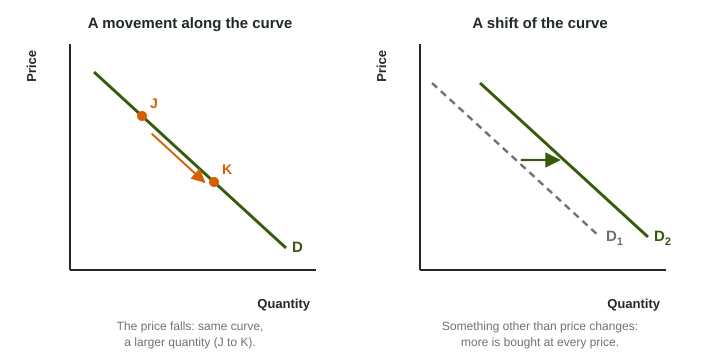

Shifts Versus Movements Along a Curve
Every curve is drawn holding other things equal.
Part 1 · Hook
Why this matters
Part 2 · Before you start
What this builds on
Part 3 · Prerequisite check
Quick check before you start
1. A curve falls from left to right. Its slope is
- negative
- positive
- zero
- impossible to say
Show the answer
Falling to the right means a negative slope.
- Correct: negative:
- positive:
- zero:
- impossible to say:
2. On a market graph, which variable is on the vertical axis?
- Price
- Quantity
- Income
- Time
Show the answer
A market graph has Price up the side and Quantity across the bottom.
- Correct: Price:
- Quantity:
- Income:
- Time:
Part 4 · See it
See it first

Part 5 · Step by step
How it works, step by step
- A curve is drawn holding every other influence fixed (ceteris paribus)it shows only how the two graphed variables relate
- A variable on one of the axes changesyou move along the curve to a new point
- Something off the axes changesthe whole curve shifts, right or left
- You draw the shift with an arrow and a new labela reader can score the curve and the direction
Part 6 · Key ideas
Key ideas
- Movement along a curve: caused by a change in a variable on one of its axes (on a market graph, the price).
- Shift of a curve: caused by a change in anything else. Right means a larger quantity at every price; left means a smaller one.
- Ceteris paribus ("other things equal") is the rule behind every curve: one of those other things changing is what shifts it.
- Label a shifted curve with a new subscript (D1 to D2) and draw an arrow showing the direction.
Part 7 · Misconception
A common mistake
The wrong idea: A lower price shifts the curve D to the right, because buyers buy more.
What actually happens: A lower price moves buyers down along the same curve D. Only a change in something other than the good's own price, such as incomes or the number of buyers, shifts D.
Part 8 · Check yourself
Check yourself
Exam-style questions. Anything you miss goes into your review queue.
1. Buyers' incomes rise, and at every price they now want more concert tickets than before. Shift the right curve the right way.
Work on the graph (it needs JavaScript), then check.
Show the answer
More tickets wanted at every price is a shift of D to the right. Price did not cause it, so it is not a movement along D.
- Key: demand shifts right
2. The price of concert tickets rises and nothing else changes. Place point X where buyers end up on the curve D.
Work on the graph (it needs JavaScript), then check.
Show the answer
A change in price, the variable on the vertical axis, moves buyers along D: a higher price and a smaller quantity, up and to the left. The curve itself stays put.
- Key: see the explanation
3. On a graph with price on the vertical axis, which change causes a movement along a curve rather than a shift of it?
- A change in the incomes of the good's buyers
- A change in the price of the good itself
- A change in the number of sellers
- A change in buyers' tastes
Show the answer
Only a change in a variable on one of the axes moves you along the curve; price is on the vertical axis.
- A change in the incomes of the good's buyers: Income is not on either axis, so it shifts the curve.
- Correct: A change in the price of the good itself: Right: price is on an axis, so it moves along the curve.
- A change in the number of sellers: The number of sellers is not on an axis, so it shifts a curve.
- A change in buyers' tastes: Tastes are not on an axis, so they shift the curve.
4. A student reads a graph and says, "The price fell, so the curve D shifted right." What is wrong with the claim?
- A fall in price shifts D left, not right
- Price is on the horizontal axis, so it does not move D
- A change in price moves along D; it does not shift D
- Nothing: a lower price shifts D right
Show the answer
Price is on an axis. A lower price moves buyers down along the same curve to a larger quantity.
- A fall in price shifts D left, not right: Price does not shift D in either direction.
- Price is on the horizontal axis, so it does not move D: Price is on the vertical axis of a market graph.
- Correct: A change in price moves along D; it does not shift D: Right: price moves you along the curve.
- Nothing: a lower price shifts D right: A lower price raises the quantity along D; the curve itself stays put.
Scenario
A coffee shop's busy month
A coffee shop graphs the price of its iced latte against the number sold each day, with one downward curve labeled D for its customers' demand. Over one month: in week 1 the shop cuts the price of a latte from $5 to $4. In week 2 a large office building opens next door. In week 3 a rival cafe across the street starts giving away free iced tea.
5. In week 1 the coffee shop cuts the latte price from $5 to $4. How does its graph show this?
- A shift of the whole curve D to the right, at each price
- A movement down along D to a larger quantity
- A shift of D to the left
- A movement up along D to a smaller quantity
Show the answer
The price is on the vertical axis, so a lower price moves down along D to more lattes sold.
- A shift of the whole curve D to the right, at each price: The price change does not shift D; it moves along it.
- Correct: A movement down along D to a larger quantity: Right: a lower price moves along D to a larger quantity.
- A shift of D to the left: Nothing here makes customers want fewer lattes at every price.
- A movement up along D to a smaller quantity: Up along D would be a higher price, not a lower one.
6. In week 2 a large office building opens next door. How does the graph show this?
- D shifts right: more lattes are wanted at every price
- A movement down along the curve D, as after a price cut
- D shifts left: fewer lattes are wanted at each price
- No change, because the price did not change
Show the answer
More nearby customers want more lattes at every price, a change off the axes, so D shifts right.
- Correct: D shifts right: more lattes are wanted at every price: Right: more buyers shift D right.
- A movement down along the curve D, as after a price cut: There is no price change here, so it is not a movement along D.
- D shifts left: fewer lattes are wanted at each price: More customers raise the lattes wanted, not lower them.
- No change, because the price did not change: A curve can shift even when the price stays the same.
7. In week 3 a rival cafe gives away free iced tea. What is the most likely change on the coffee shop's graph?
- D shifts right: customers want more drinks
- A movement up along D
- A movement down along D
- D shifts left: some customers drink free tea instead
Show the answer
Free tea is a cheaper choice for some customers, so fewer lattes are wanted at every price: D shifts left. The latte price itself did not change.
- D shifts right: customers want more drinks: Free tea pulls customers away from lattes, not toward them.
- A movement up along D: A movement along D needs a change in the latte price.
- A movement down along D: A movement along D needs a change in the latte price.
- Correct: D shifts left: some customers drink free tea instead: Right: fewer lattes wanted at every price.
Part 9 · Summary
Summary
Part 10 · Up next
What comes next
Part 11 · Connections